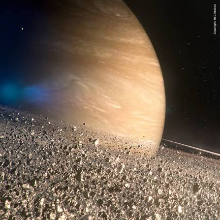

Saturno é o sexto planeta do Sistema Solar e é conhecido
principalmente por seus impressionantes anéis. Ele é um
gigante gasoso, formado principalmente por hidrogênio e
hélio, e possui um tamanho muito maior que o da Terra.
Saturno está localizado a uma grande distância do Sol.
Mesmo assim, ele pode ser observado da Terra sem o uso
de equipamentos muito avançados.
Os anéis de Saturno
Os anéis são uma das características mais marcantes
de Saturno. Eles são formados principalmente por
partículas de gelo, poeira e pequenos fragmentos de
rocha que orbitam o planeta.
Apesar de parecerem sólidos quando observados de longe,
os anéis são formados por bilhões de partículas de
diferentes tamanhos.

Curiosidades sobre Saturno
Saturno é um dos maiores planetas do Sistema Solar.
Ele é tão grande que centenas de planetas do tamanho
da Terra poderiam caber dentro dele.
Outra curiosidade é que Saturno possui muitas luas.
Entre elas está Titã, uma das maiores luas do Sistema
Solar e que possui uma atmosfera bastante espessa.
Saturno também possui ventos extremamente rápidos
em sua atmosfera e uma grande tempestade conhecida
como o hexágono de Saturno, localizada em seu polo norte.
Saturno no espaço
Diversas missões espaciais já estudaram Saturno e suas
luas. Uma das mais importantes foi a missão Cassini,
que passou anos observando o planeta, seus anéis e
seus satélites naturais.